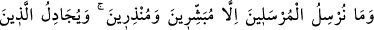
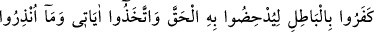
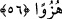
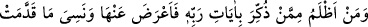

56. Biz rasulleri, sadece müjdeleyiciler ve uyarıcılar olarak göndeririz. Kâfir
olanlar ise, hakkı bâtıla dayanarak ortadan kaldırmak için bâtıl yolla mücâdele
verirler. Onlar âyetlerimizi ve uyarıldıkları şeyleri alaya almışlardır.
“Biz” geçmiş ümmetlere “rasulleri sadece” inanıp itâat edenlere sevabı ve mânevî
dereceleri “müjdeleyiciler ve” isyan eden kâfirleri ise azabla, hor ve zelil eden
derekelere düşürülmekle “uyarıcılar olarak göndeririz.” Çünkü müjdelenen şeylere
ulaşmanın ve uyarılan şeylerden sakınmanın yolu sadece akılla bilinecek şeylerden
değildir. İşte bu iki yolu beyan etmek üzere peygamberler göndermesi, Allah’ın
kullarına sonsuz lütfundan ve engin merhametindendir.
Fakir (Bursevî) der ki: Âyet, İsrâiloğulları’nın nebileri mesâbesinde olan âlimlerin
de Allah Teâlâ’dan insanlara bir rahmet olduğuna işarettir. Çünkü onların beyanı ile
şüphe karanlığı bertaraf edilmekte, şüphe tohumu ile yeşeren düğümler çözülmekte,
onların irşadı ile kâmil mânâda hidâyet hâsıl olmakta ve sülûk tamamlanmaktadır.
“Kâfir olanlar ise, hakkı bâtıla dayanarak ortadan kaldırmak için bâtıl yolla”
müjdelemek ve uyarmak için gönderilen peygamberlerle “mücâdele verirler.”
Pervasızca peygamberlere îtiraz ederler ve: “Siz de bizim gibi insandan başka bir şey
değilsiniz” (Yasin 36/15) “Eğer Allah (elçi göndermek) dileseydi, melekleri
indirirdi.” (el-Mü’minûn 23/24) derler. Sırf inat olsun diye, mûcizeler ortaya
konulduktan sonra Allah’ın âyetlerini saçma sapan gerekçelerle inkâra yeltendiler.
Peygamberlerin beraberinde olan hakkı yerinden ve merkezinden kaydırmaya ve yok
etmeye kalkıştılar.
Zemahşerî’nin beliğ ifâdelerinden biri de şudur: “Muvahhidlerin delilleri
şüphecilerin şüphesi ile ortadan kaldırılamaz. İbrahim’in yükselttiğini (Kâbe’yi) Ebrehe
nasıl yıkabilir?!
Mesnevî’de der ki:
Kim Allah mumunu üflerse
O mum sönmez, üfleyenin ağzı yanar.
“Onlar” birliğime, kudretime ve benzerlerine delâlet eden “âyetlerimizi ve
uyarıldıkları şeyleri” korkutuldukları azâbı “alaya almışlardır.”